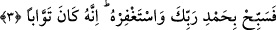

maksad, din kapısının insanların önünde açılmasıdır.
“Gurup gurup” anlamına gelen “efvâcen” kelimesi, “yedhulune”nin fâilinden hâldir.
Gerçekten tüm Arap kabileleri dîne fevc fevc girmişlerdir. Hâlbuki daha önce teker
teker, ikişer ikişer girmekteydiler.
Rivâyete göre Efendimiz (s.a.) Mekke’yi fethedince, Araplar birbirlerinin yanına
gittiler, “Hz. Muhammed (s.a.) Harem ehline karşı muzaffer olunca O’na kimse karşı
koyamaz. Allah onları Fil Ashâbı’ndan ve onların kötü niyetlerinden korumuştu”
dediler. Bunun üzerine Araplar’dan dileyenler savaşmaksızın İslâm dinine girmeye
başladılar.
Kâşifî demiştir ki: Bu sûrenin indiği senede tâbi olmak için gelme durumu vardı. Zira
Benî Esed, Benî Mürre, Benî Kelb, Benî Kinâne, Benî Hilâl ve bunlardan başka bu
mahalde bulunan diğerleri Rasûlullah (s.a.)’in hizmetine geldiler ve İslâm’la müşerref
oldular.
Ebû Ömer b. Abdulber der ki: Rasûlullah (s.a.), Araplar arasında müslüman olmadık
bir kimse kalmadıkça vefat etmemiştir. Bütün Araplar Huneyn’den sonra Rasûlullah
(s.a.) vefat etmeden müslüman olmuştu. Kimi bizzat gelerek müslüman olmuş, kimileri
de heyet göndermişlerdir.
İbn Atıyye şöyle der: Allah daha iyi bilir ya “Rasûlullah (s.a.)’in sağlığında
müslüman olmadık tek Arap kalmadı” sözünden maksad, puta tapan müşrik Araplar olsa
gerektir. Çünkü hristiyan Araplardan Benî Tağlib kabilesi Rasûlullah (s.a.)’in hayatında
müslüman olmamışlardı. Bundan dolayı da cizye vermekteydiler.
Aynü’l-maânî’de deniyor ki: Bu âyette geçen ‘nâs’ kelimesinden maksad ehlü’l-Bahr;
yâni deniz kenarında oturanlardır. Nitekim Rasûlullah (s.a.) buyurur ki; “İman
Yemenli’dir. Hikmet de Yemenlidir.” [246] Ve yine O (s.a.) “Rabbinizin nefesini Yemen
cânibinde buldum” buyurur.[247] Yâni “Rabbinizin sıkıntıları gidermeyi, Yemen
tarafından yaptığını gördüm.”
Rivâyet olunduğuna göre bir gün Hz. Câbir’i ağlarken görürler ve sebebini sorarlar.
Der ki: ‘Ben Rasûlullah (s.a.)’den işittim, buyuruyordu ki: “İnsanlar Allah’ın dînine
grup grup girdiler ve bu dînden grup grup çıkacaklar.” [248]
3. (İşte o zaman) Rabbine hamdederek O’nu tesbîh et ve O’ndan mağfiret dile.
Çünkü O, tevbeleri çok kabul edendir.
“Rabbine hamd ederek O’nu tesbîh et.” Tesbîh sebebiyet alâkası ile “teaccüb etmek/
şaşırmak”tan mecâzdır. Çünkü acâib bir durumla karşı karşıya kalan bir kimse, tesbîh
eder; “sübhânellah” der.
İbnü’ş-Şeyh der ki: el-Ezkâr’da da ifâde edildiği üzere taaccüb esnâsında ‘tesbîh’